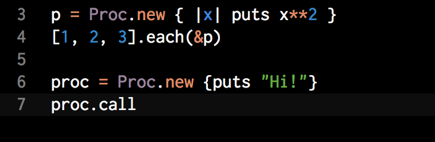
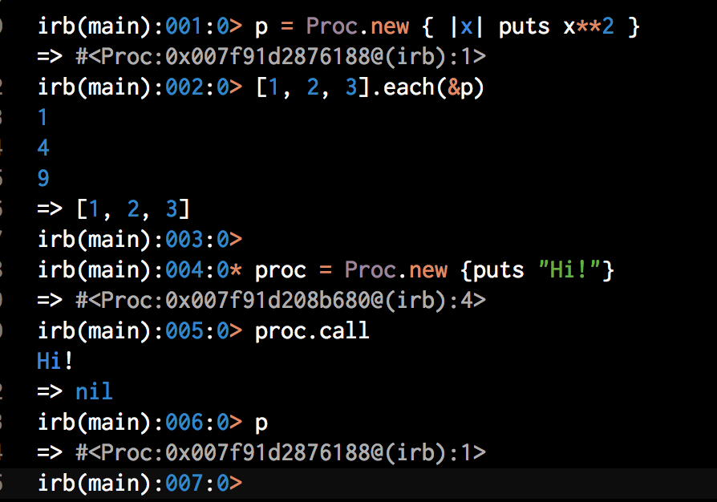
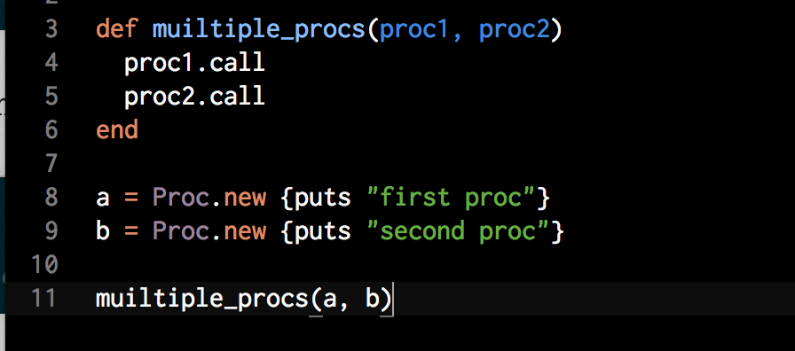
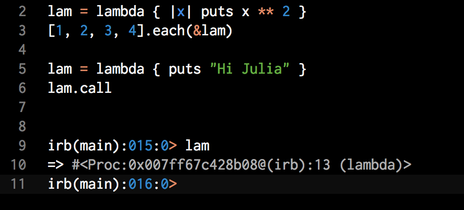
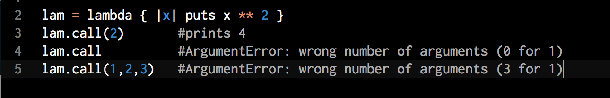
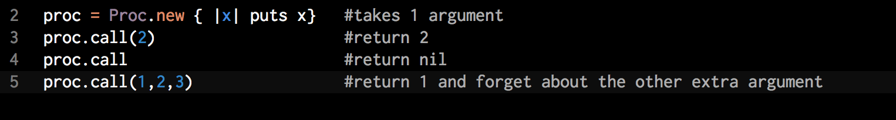

What are blocks, procs, and lambdas?
June 27 2015
Maybe one of the confusing parts of learning Ruby is understanding what is blocks, procs and lambdas and how they work. Blocks, Procs and lambdas (referred to as closures in Computer Science) is a powerful side of Ruby.
Blocks and Procs
We already met blocks many times and declare them braces {} or do...end
Look on the next example. This is Proc and '&' is special symbol tells ruby to turn the proc into a block
Both of this example very similar and still hard to undesrtand differences between block and proc. But there are some differences between them.
Proc are objects, block are not
A proc is an instance of the Proc class. When we run our example in console we will see the p returns a proc object. 
At most one block can appear in an argument list
You can pass multiple procs to methods.
Procs and Lambdas
Procs and Lambdas are both Proc objects.
Lambdas check the number of arguments, while procs do not
when proc
